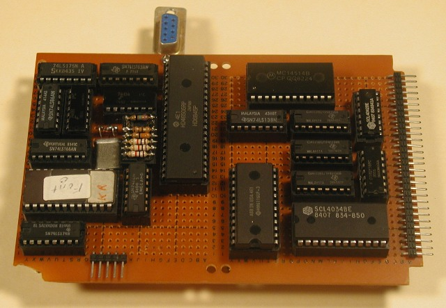

The video card is based on a 6845 circuit from the May 1979 issue of Byte magazine. The circuit uses a 6116 2Kx8 Ram and provides dual port access to the RAM for both the system bus (circuit on the right) and video generation (circuit on the left). The circuit does not wait for horizontal or vertical blanking to access the RAM so the picture has a fair amount of "snow" while the video RAM is being updated. The monitor connects via a DB-9 hanging off the side of the card.
